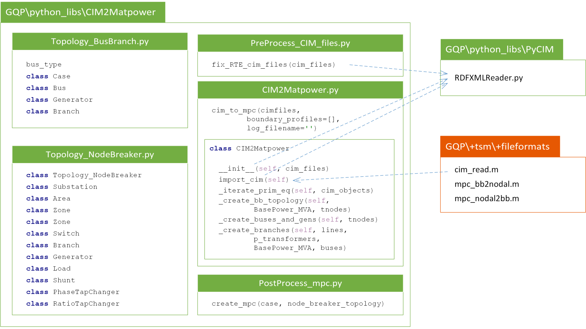

Sturcture and Dependencies¶
| Date: | 2016-05-10 |
|---|---|
| Authors: | Konstantin Gerasimov |
| e-mail: | kkgerasimov@gmail.com |
| Credits: | Created for KU-Leuven as part of the GARPUR project http://www.garpur-project.eu |
The tool for import of CIM transmission system network models is created for KU-Leuven as part of the GARPUR project http://www.garpur-project.eu
Warning
The current implementation of the tool works for CIMv14 IEC61970 and is fine tuned for the RTE CIM export tool!
It consists of: * Python packages:
PyCIM- open source Python implementation of the IEC Common Information Model https://pypi.python.org/pypi/PyCIM/15.13.4Warning
The current implementation of the tool has modified 2 files from the original PyCIM package:
PyCIM\RDFXMLReader.py(because of a bug in the reading of boolean values and some minor adjustments in the logging) and theCIM14\IEC61970\Topology\TopologicalNode.py(in order to add theControlAreaattribute which is present in the RTE CIM export tool but not in the CIMv14 IEC61970 standard)!
CIM2Matpower- a package specially developed for the GARPUR project
- Matlab file: cim_read(), cim_bb2nodal() and cim_nodal2bb()
The tool is intended to be used by the Matlab function cim_read() (however it is only mainly a Matlab interface to the Python packages). The transofmrations between BusBranch to NodeBreaker topology models and vice versa (for example necessary in order to perform switching actions) is done only in Matlab by the functions cim_bb2nodal() and cim_nodal2bb().
The package main structure and dependencies are shown in the figure below. In green are the Python pakcages and in red - the Matlab. The dashed arrows represent the dependencies between the packages.
